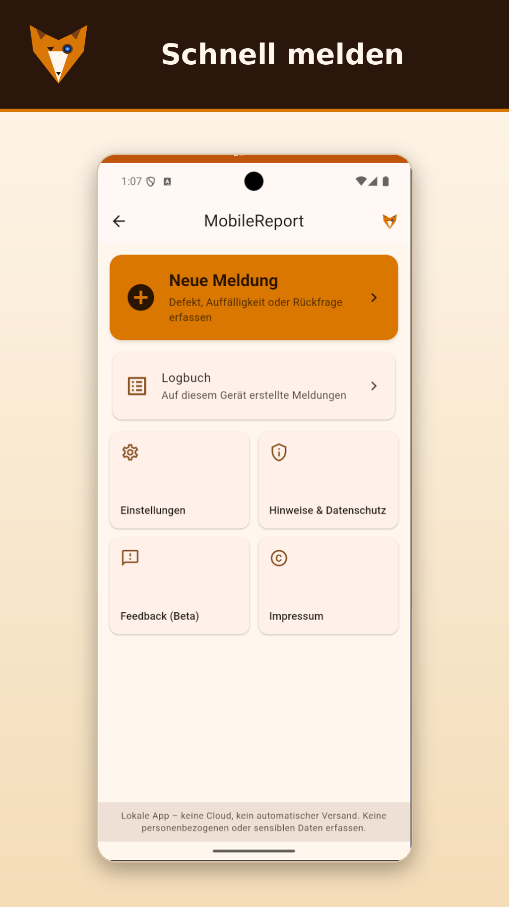
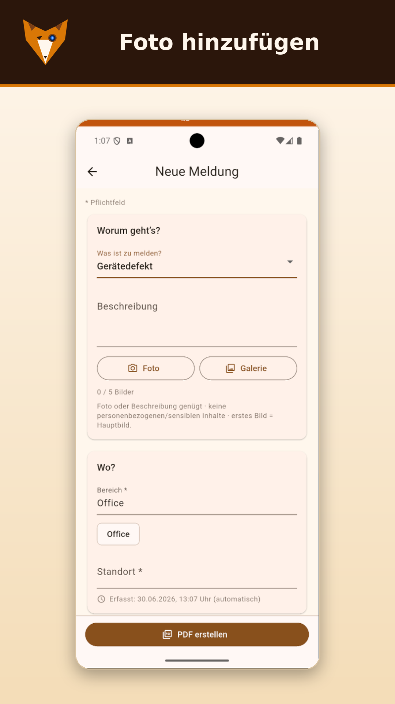
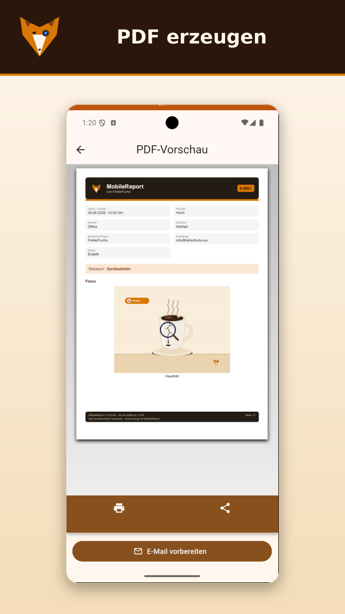
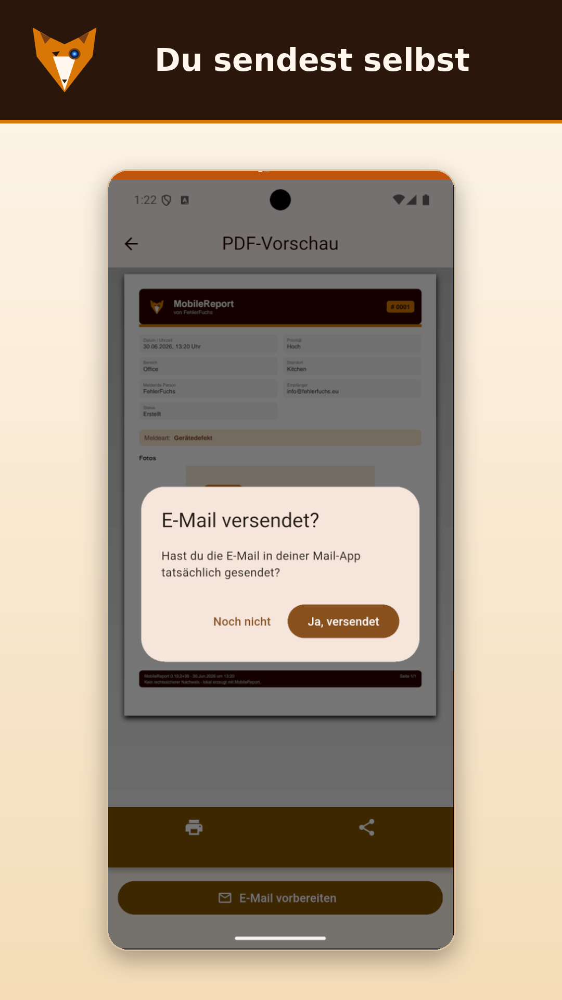
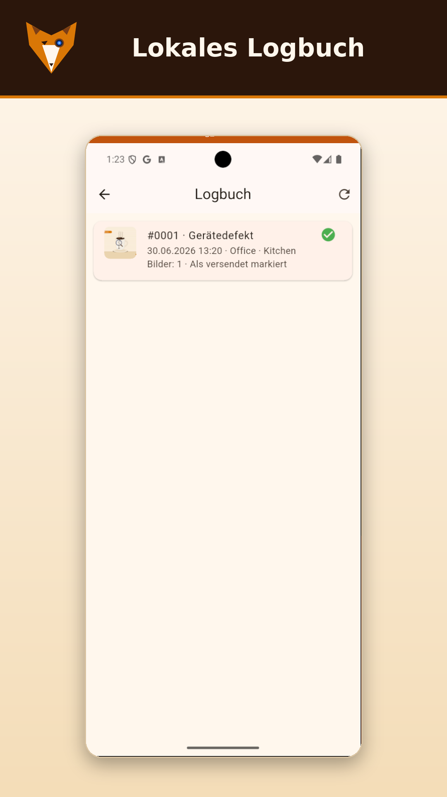
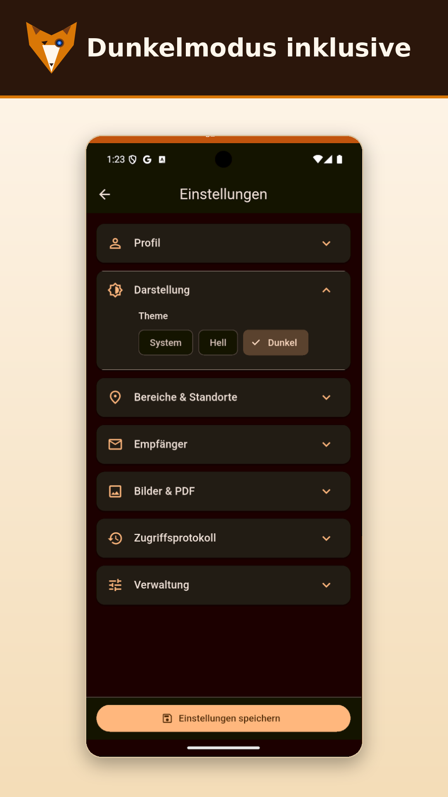

Der Play-Store-Link wird hier aktiv, sobald Google die App freigegeben hat.
Im Launch – jetzt bei Google Play
MobileReport (Free) ist bei Google Play eingereicht und wird gerade geprüft. Sobald Google die App freigibt – bei einer ersten App meist wenige Tage, bei einem neuen Entwicklerkonto auch mal etwas länger – erscheint sie im Play Store und lässt sich für alle installieren. Ab dann wird der Play-Store-Button auf dieser Seite aktiv.
Worum es geht
Im Alltag geht ständig etwas kaputt, fällt auf oder muss weitergegeben werden – und am Ende sucht man Zettel, Fotos und Mailadressen zusammen. MobileReport macht daraus einen geraden Weg: Meldung eintippen, Foto dazu, PDF erzeugen, fertig vorbereitete E-Mail öffnen, senden.
Entstanden ist MobileReport als erste FehlerFuchs-App – bewusst klein und ehrlich: es löst genau dieses eine Problem und sonst nichts. Ohne Cloud, ohne Konto, ohne Tracking. Auf dieser Grundlage gibt es heute vier Editionen – von kostenlos-privat bis maßgeschneidert für Firmen.
Funktionen im Detail
Schnell erfassen
Gerät, Bereich, Kategorie, Priorität und Beschreibung – in wenigen Sekunden eingetragen.
Fotos sicher dabei
Per Kamera oder Galerie. EXIF-/Standortdaten werden vor dem Speichern entfernt.
PDF auf Knopfdruck
Sauberes PDF mit fortlaufender Logbuch-Nummer – lokal erzeugt.
E-Mail vorbereitet
Öffnet die Mail-App mit Empfänger, Betreff und PDF-Anhang. Senden tust du selbst.
Empfänger verwalten
Mehrere Empfänger lokal hinterlegen und schnell auswählen.
Lokales Logbuch
Alle auf dem Gerät erstellten Meldungen im Überblick – jederzeit löschbar.
Vorkonfiguration & Excel-Import
Bereiche, Standorte und Empfänger mit Zuständigkeiten einmal bei der Einrichtung festlegen – auch bequem per Excel-Import. Die Excel-Vorlage liegt im Downloadbereich.
So funktioniert's
Meldung erfassen: Gerät, Bereich, Kategorie, Priorität und Beschreibung eintragen. Bereich, Standort und Empfänger (inkl. Zuständigkeiten) lassen sich bei der Ersteinrichtung vorkonfigurieren – auf Wunsch per Excel-Import (Excel-Vorlage im Downloadbereich).
Foto hinzufügen (optional): per Kamera oder Galerie – keine sensiblen Inhalte.
PDF erstellen: antippen und die Vorschau prüfen.
E-Mail vorbereiten: Mail-App öffnet mit Empfänger, Betreff und Anhang.
Senden & bestätigen: selbst senden und im Logbuch als „versendet" markieren.






Echte Ansichten aus der App (Android).
Editionen im Vergleich
Gleicher Kern, unterschiedlicher Zuschnitt – von privat bis Firma:
Vorkonfiguration (Bereiche/Standorte/Empfänger) per Excel-Import
–
✓
✓
✓
Erweiterte Filter & Suche im Logbuch
Basis
✓
✓
✓
Eigene Vorlagen & Branding
–
Firmen-Logo
✓
komplett eure Marke
Eigene Logbuch-Zählweise & Dateinamen-Generator
Standard (fest)
✓
✓
✓
Geräteübergreifend synchronisiertes Logbuch
–
–
nur auf Wunsch ¹
nur auf Wunsch ¹
Anbindung an firmeneigene Systeme/Server
–
–
nur auf Wunsch ¹
nur auf Wunsch ¹
App unter eigenem Namen/Logo (im Store)
–
–
–
✓
Status
Im Launch (Google Play)
Beta in Kürze
auf Anfrage
auf Anfrage
¹ Nur auf ausdrücklichen Kundenwunsch (Custom/White-Label). Damit ist es keine reine Offline-Lösung mehr — Daten verlassen dann das Gerät (eigener Server bzw. Geräte-Sync).
Keine CloudKein TrackingKeine TelemetrieKeine WerbungKein KontoNur lokal
Die App erfasst keine Daten und überträgt nichts an den Entwickler oder Dritte. Sie versendet auch nicht selbst – du prüfst und sendest die E-Mail manuell über deine Mail-App. Was es nicht ist: kein rechtssicheres Nachweissystem, kein zentrales Ticketsystem, keine Cloud-App. Bitte keine personenbezogenen oder sensiblen Inhalte erfassen oder fotografieren.
Häufige Fragen
Wann ist MobileReport verfügbar?
Die Free-Edition ist bei Google Play eingereicht und wird gerade geprüft. Sobald Google sie freigibt – bei einer ersten App meist wenige Tage, bei einem neuen Konto auch mal etwas länger – erscheint sie im Play Store und ist für alle installierbar; ab dann wird der Play-Store-Button auf dieser Seite aktiv. Wenn du zum Start eine kurze Nachricht möchtest: support@fehlerfuchs.eu.
Was kostet MobileReport?
Die Free-Edition ist kostenlos und werbefrei. Pro wird später optional kostenpflichtig sein; Custom und White-Label nach Aufwand/Angebot. Das Grundlegende bleibt immer kostenlos.
Wo werden meine Daten gespeichert?
Ausschließlich lokal auf deinem Gerät. Es gibt keine Cloud, kein Konto und keine Übertragung an uns oder Dritte.
Verschickt die App automatisch E-Mails?
Nein. MobileReport bereitet die E-Mail mit Empfänger, Betreff und PDF nur vor – senden tust du selbst in deiner Mail-App.
Für welche Plattform gibt es die App?
Zunächst für Android. Eine iOS-Variante ist nicht ausgeschlossen, aktuell aber nicht geplant.
Was ist der Unterschied zwischen Pro und Custom?
Pro ist die konfigurierbare Firmenversion (Pflichtfelder, Sync, Branding). Custom geht darüber hinaus und wird individuell auf eure Abläufe und Schnittstellen zugeschnitten.
Kann ich die App unter eigener Marke bekommen?
Ja – das ist die White-Label-Edition: eure App mit eurem Namen, Logo und euren Farben, auf Wunsch im Store.